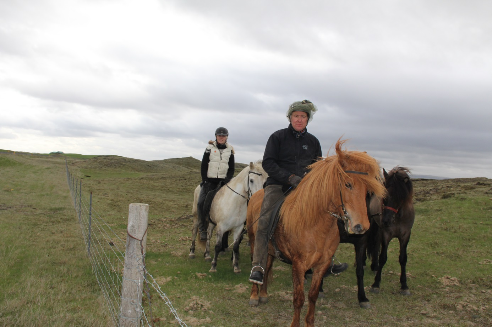
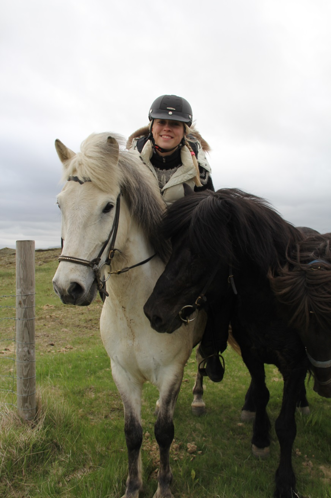
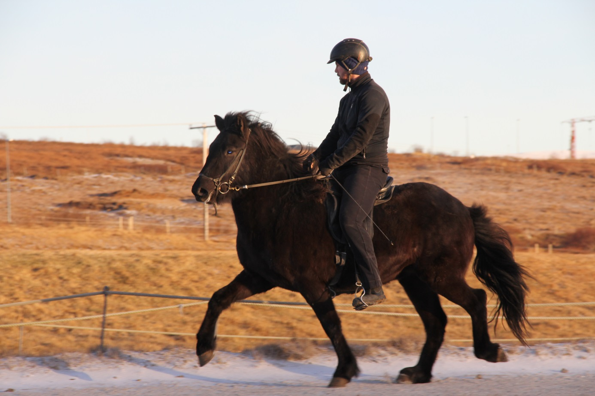

Reiðhestarnir okkar

Hvinur frá Hamrafossi
IS1997185031
Faðir: Kveldúlfur frá Kjarnholtum I (IS1992188561)
Móðir: Gloría frá Hemlu I (IS1981286021)

Kjarkur frá Prestsbakka
IS2002185028
Faðir: Magni frá Prestsbakka (IS1998185026)
Móðir: Freyja frá Prestsbakka (IS1993285026)
Frakkur frá Þykkvabæ I
IS2006185265
Faðir: Aron frá Strandarhöfði (IS1998184713)
Móðir: Freyja frá Prestsbakka (IS1993285026)
Svartstjarna frá Þykkvabæ I
IS2000285260
Faðir: Ásaþór frá Feti (IS1991186919)
Móðir: Mósa frá Teigi II (IS1987284810)
Blökk frá Þykkvabæ I
IS1997285260
Faðir: Feykir frá Hafsteinsstöðum (IS1977157350)
Móðir: Jörp frá Þykkvabæ I (IS1978285261)

Æsa frá Þykkvabæ I
IS2009285261
Faðir: Eldjárn frá Tjaldhólum (IS2000184814)
Móðir: Freyja frá Þykkvabæ I (IS2001285260)
Unghross
Baldur frá Þykkvabæ I
IS2015185260
Faðir: Arður frá Brautarholti (IS2001137637)
Móðir: Lyfting frá Þykkvabæ I (IS2006285260)
Blesi frá Þykkvabæ I
IS2013185260
Faðir: Konsert frá Korpu (IS2005101001)
Móðir: Lyfting frá Þykkvabæ I (IS2006285260)
Stjarna frá Þykkvabæ I
IS2013285260
Faðir: Glóðafeykir frá Halakoti (IS2003182454)
Móðir: Freyja frá Prestsbakka (IS1993285026)
Náttfari frá Þykkvabæ I
IS2012185260
Faðir: Kiljan frá Steinnesi (IS2004156286)
Móðir: Freyja frá Prestsbakka (IS1993285026)